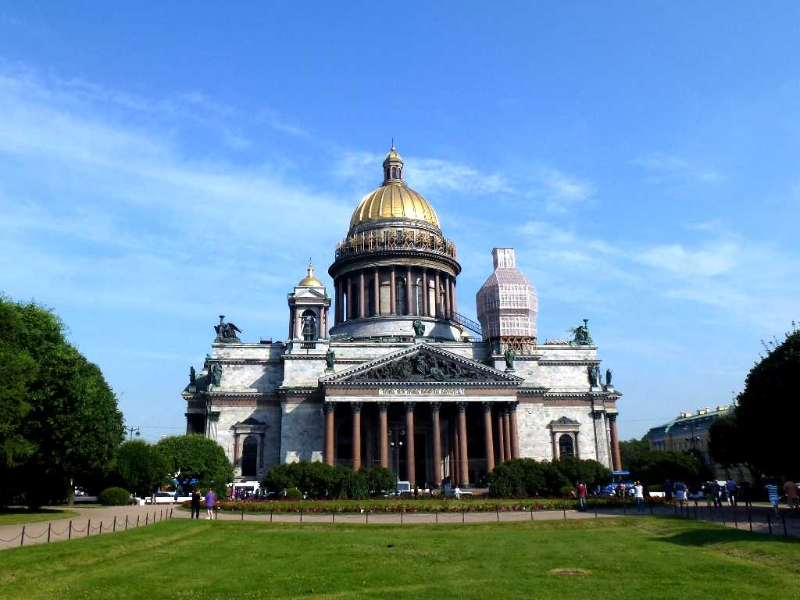
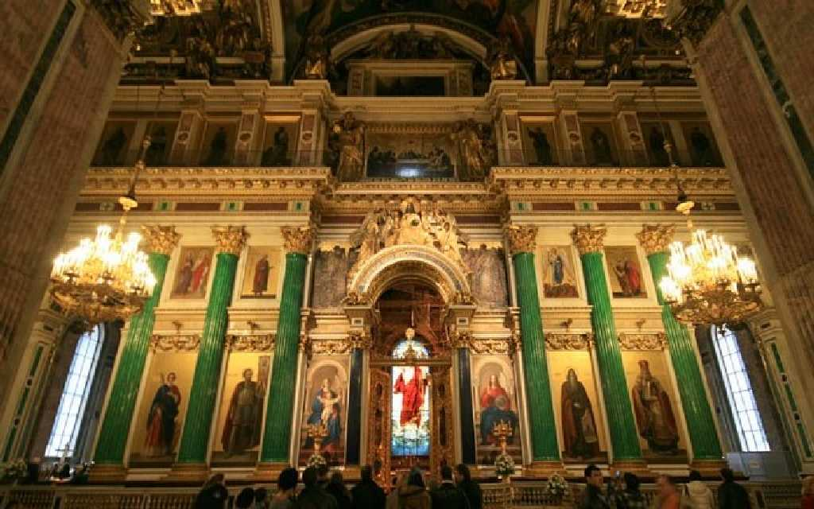
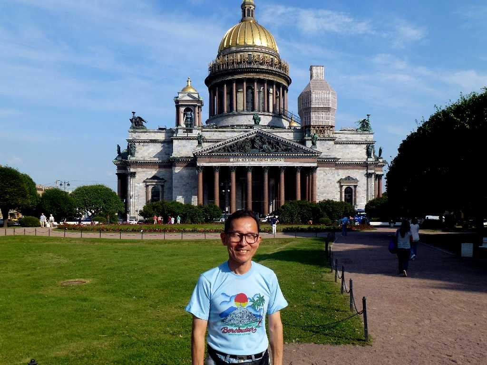
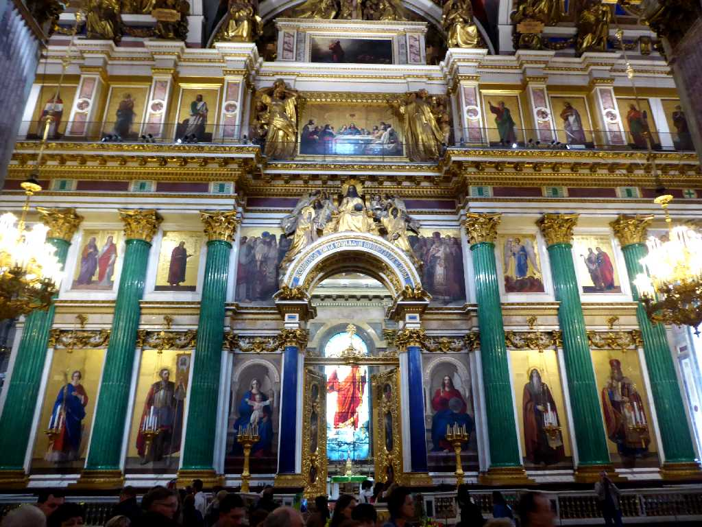
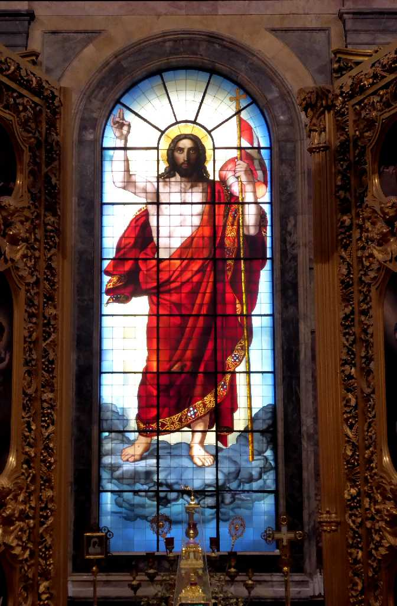
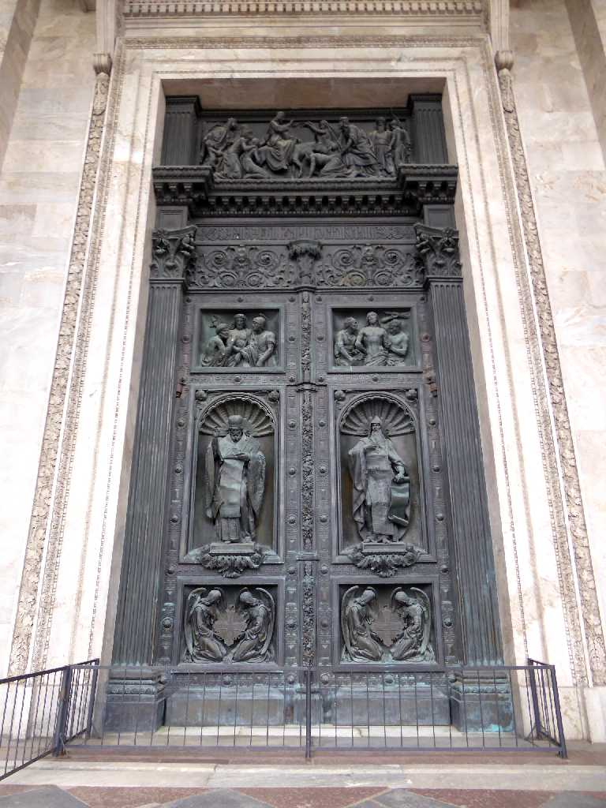
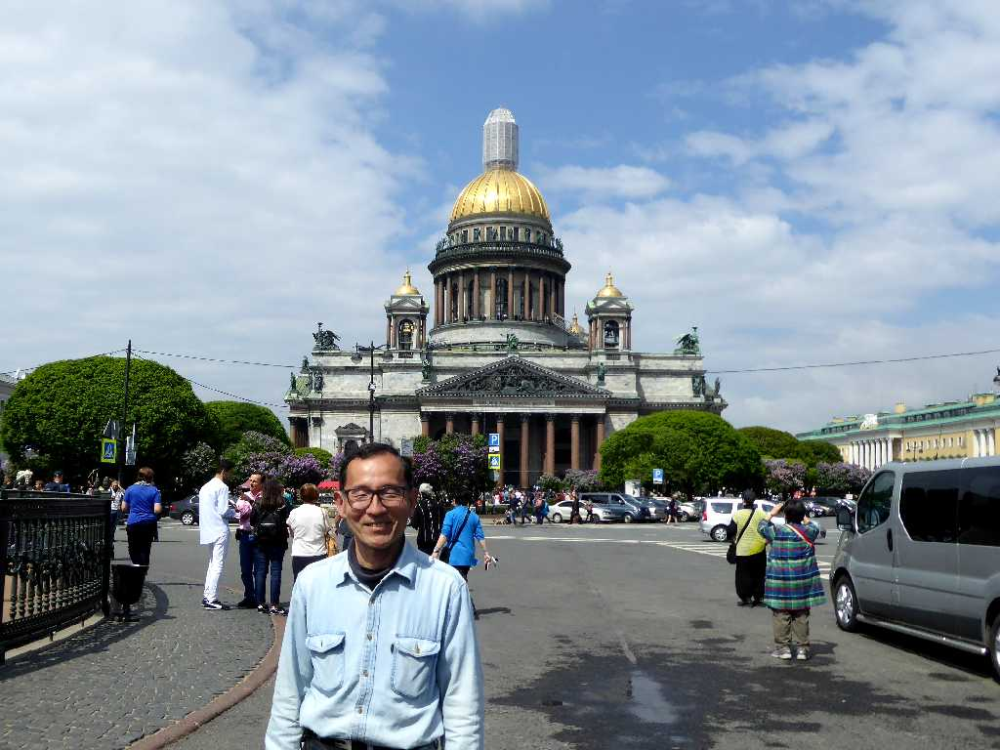

Saint Isaac Cathedral Sankt Peterburg
８０日間世界一周鉄道の旅で２２日目 ピョートル大帝の守護聖人であるダルマチアの成人イサアクを祀る聖イサアク大聖堂

Altar Saint Isaac Cathedral
初代のピョートル大帝の１８世紀に聖イサアク教会が創られたのち１８５８年に現在の大聖堂が再建された

July 15 2013 Saint Isaac Cathedral
Saint Isaac Cathedral Sankt Peterburg
８０日間世界一周鉄道の旅で訪問以来４年ぶりの再訪問

Altar Saint Isaac Cathedral
 
Saint Isaac Cathedral

June 10 2017 Saint Isaac Cathedral